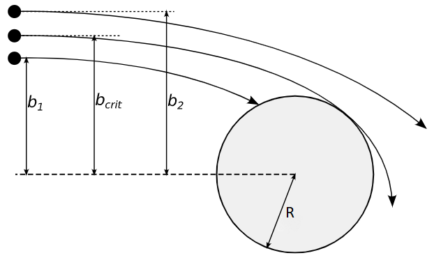

Radial motion theory - ABR
ABR assumes that ions and electrons are collisionless and initially stationary far from
the dust grain. Thus any gain in the electron or ion is due to electrostatic potential $\phi(r)$, with
the ions and electrons moving radially with respect to the dust grain,
$$\frac{1}{2}m_iu^2_i = -e\phi(r)$$
where $u_i$ is the inward ion velocity and $\phi(r)$ tends to zero a infinity. Via Poisson's equation we relate the potential with the electron
and ion densities, $n_e$ and $n_i$ respectively
$$\nabla^2\phi(r) = \frac{e(n_i - n_e)}{\epsilon_0}$$
In the steady state for the dust grain the electron and current will be equal $I_e = I_i$. The ion
current, at a distance $r$, may be expressed as
$$I_i = 4\pi r^2 n_i(r)eu_i(r)$$
$$n_i(r) = \frac{I_i}{4 \pi r^2 e u_i(r)}$$
Assuming that the electron density follow a Boltzmann distribution, it may be expressed as
$$n_e(r) = n_0exp[\frac{e\phi(r)}{kT_e}]$$
where $T_e$ is the electron temperature and $n_0$ is the plasma density within which the dust grain is situated.
Therefore the electron current is given by
$$I_e = -4\pi R^2en_0\sqrt{\frac{kT_e}{2\pi m_e}}exp(\frac{e\phi_R}{kT_e})$$
To facilitate numerical integration later on we define normalised units as follows
$$\Phi = \frac{-e\phi}{kT_e}\text{,}\quad\rho = \frac{r}{\lambda_D}\text{,}\quad P = \frac{R}{\lambda_D},\quad N_i = \frac{n_i}{n_0},\quad N_e = \frac{n_e}{n_0}$$
$$J = \frac{I_i}{4\pi \lambda^2_D n_0e\sqrt{\frac{2kT_e}{m_i}}}$$
where $\lambda_D$ is the electron Debye length, given by
$$\lambda_D = \sqrt{\frac{\epsilon_0 k_B T_e}{n_0 e^2}}$$
The radial component of Laplace operator, $\nabla^2$, in spherical coordinates is given by
$$ \frac{1}{r^2}\frac{\partial}{\partial r}(r^2\frac{\partial}{\partial r})$$
We now substitute these normalised variables into our Poisson equation using the spherical coordinate representation
$$\frac{1}{\rho^2}\frac{d}{d\rho}(\rho^2\frac{d\Phi}{d\rho}) = N_i - N_e$$
Re-arranging $N_{i,e}$ in terms of normalized variables, $N_i = J \Phi^{-\frac{1}{2}}/\rho^2$ and $N_e = exp(-\Phi)$.
In order to integrate our normalised Poisson equation numerically we require three boundary conditions to calculate $\Phi$
for any $\rho$. We begin by assuming that at some distance $\Phi_b$ from the dust grain the plasma conditions are such that
quasi-neutrality may be assumed. This means that at $\Phi_b$, the variables $N_i$,$N_e$ are much larger than the left hand side of the
Poisson equation hence, setting this side to zero, we re-arrange for $\rho$,
$$\rho \approx \frac{J^{\frac{1}{2}}exp(\frac{\Phi}{2})}{\Phi^{\frac{1}{4}}}$$
this is known as the "plasma solution". In order to produce our secondary boundary condition we take the
derivative of the plasma solution with respect to $\rho$ and evaluate at $\rho_b$
$$[\frac{d\Phi}{d\rho}]_{\rho_b} = \frac{2\rho_b \Phi^{\frac{3}{2}}_{b} exp(-\Phi_b)}{J(\Phi_b - \frac{1}{2})}$$
where $\Phi_b$ is the potential evaluated at $\rho_b$. Finally we require a relation between $J$ and $\Phi_b$, this is produce via
taking the derivative of the plasma solution in order to find an expression for
$$\frac{d}{d\rho}(\rho^2\frac{d\Phi}{d\rho})$$
given our assumptions for the plasma condition at $\rho_b$ the above expression will only be valid if it is small relative
to $J\Phi^{\frac{-1}{2}}$ the expression for $N_i \rho^2$. This produces a "plasma condition" given by
$$\frac{4\Phi(2\Phi - 3)(2\Phi + 1)}{(2\Phi - 1)^3} \ll \frac{J}{\Phi^{\frac{1}{2}}}$$
thereby producing our third boundary condition of
$$\frac{J}{\gamma} = \frac{4\Phi^{\frac{3}{2}}(2\Phi - 3)(2\Phi + 1)}{(2\Phi - 1)^3}$$
where $\gamma$ is an arbitrary value much larger than unity. By selecting a value for $J$ and $\gamma$ one can find a
a value for $\Phi_b$, which may then be used to calculate $\rho_b$ and $[\frac{d\Phi}{d\rho}]_{\rho_b}$. By subsituting our normalized variables
into the electron-ion current equivalence, at the surface of the dust grain we find $$\frac{J}{P^2} = \alpha exp(-\Phi_p)$$ where
$\alpha = \sqrt{\frac{m_i}{4\pi m_e}}$. Once these are calculated,
a numerical integrator may be used to solve this initial value problem for $\Phi$. Vary the normalized current density and gamma, noting the repose of the $\rho$-$\phi$ curve.
Orbital Limited Motion - OML
We now consider plasma particle motion that is not purely radial, the most basic model of this being orbital motion
limited (OML) which gives a surface potential that is independent of the dust grain size.
We consider that from an infinite distance a plasma particle j is approaching a spherical dust grain of radius $R$
and charge $q_R$. When the plasma particle enters the Debye sphere of the dust grain
it feels the influence of dust grain and its path changes due to the electrostatic force. We assume that $v_j$ and
$v_{gj}$ are the speed of the of the plasma particle before and after its grazing
collision with the dust grain. As we decrease the impact parameter $b_j$, the
plasma particle hits the dust grain.

The cross section for charging collisions
between the dust and the plasma particle $j$ is $\sigma^R_j = \pi b^2_j$. Conservation of momentum and energy
requires that
$$
m_jv_jb_j = m_jv_{gj}R
$$
and
$$
\frac{1}{2}m_jv^2_j = \frac{1}{2}m_jv^2_{gj} + \frac{q_jq_R}{4\pi\epsilon_0R}
$$
The dust grain charge $q_R$ is related to the potential difference $\phi_R = \phi_g - \phi_p$ between the grain
potential $\phi_g$ and the plasma potential $\phi_p$ i.e $q_R = C\phi_R$, where capacitance $C$ of the
spherical dust grain in a plasma is $C = Rexp(-R/\lambda_d)\simeq R$ for $\lambda_d >> R$. Using the relation
$q_R = R\phi_R$ and conservation of momentum and energy equations one can express $b_j$ in terms of $\phi_R$.
Thus $\sigma^R_j$ becomes
$$\label{eq:sig}
\sigma^R_j = \pi R^2(1-\frac{2q_j\phi_R}{m_jv^2_j})
$$
If $f_j(v_j)$ is the velocity distribution of the plasma species at infinite distances from the dust grain,
the dust grain current $I_j$ carried by the plasma species $j$ is
$$\label{eq:I}
I_j = q_j\int_{v^{min}_j}^{\inf}v_j\sigma^R_jf_j(v_j)d\textbf{v}_j
$$
where $v^{min}_j$ is the minimum value of the plasma particle velocity for which the particle hits the dust grain.
To approximate $v^{min}_j$ we consider two situations, namely $q_j\phi_R < 0$ and $q_j\phi_R > 0$. When $q_j\phi_R < 0$, the plasma
particle and dust grain attract each other and the integration equation is to be preformed over the complete $v_j$ domain.
On the other hand, when $q_j\phi_R > 0$, the plasma particle and the dust grain repel each other and hence $v^{min}_j > 0$ in
order to allow for a collision between the dust grain and the plasma particle. Thus in this case $v^{min}_j$ becomes
$$
v^{min}_j = \frac{1}{\sqrt{-\frac{2q_j\phi_R}{m_j}}}
$$
we further assume that the velocity distribution of the plasma species is Maxwellian, i.e
$$
f_j(v_j) = n_j(\frac{m_j}{2\phi k_B T_j})^{3/2}exp(-\frac{m_jv_j^2}{2k_BT_j})
$$
where $n_j$ is the plasma particle number density. Substituting our expression for the collisional cross section and the
maxwellian velocity distribution expressing the result in spherical polar coordinates and integrating we can write the
charging current $I_j$ for attractive($q_j\phi_R < 0$) potentials as
$$
I_j = 4\pi R^2 n_j q_j (\frac{k_BT_j}{2\pi m_j})^{1/2}(1 - \frac{q_j\phi_R}{k_B T_j})
$$
repulsive($q_j\phi_R > 0$) potentials as
$$\label{eq:2.2.7}
I_j = 4\pi R^2 n_j q_j (\frac{k_BT_j}{2\pi m_j})^{1/2}exp(-\frac{q_j\phi_R}{k_B T_j})
$$
the former of which is the ion surface flux and the latter of which corresponds the electron surface flux. By equating the electron
ad ion surface fluxes, $I_i = I_e$ and not accounting for secondary sources of ion or electron emmission, we find that
$$
\sqrt{\frac{T_i}{m_i}}(1-\frac{Ze\phi_R}{k_B T_i}) = \sqrt{\frac{T_e}{m_e}}(1-\frac{e\phi_R}{k_B T_e})
$$
now defining the normalized variables $\beta = \frac{T_i}{T_e}$, $\mu = \frac{m_i}{m_e}$, $\Phi_R = \frac{-e\phi_R}{k_B T_e}$
$$
\sqrt{\frac{\beta}{\mu}}(1 + \frac{Z \Phi_R}{\beta}) = exp(-\Phi_R)
$$
multiply by $\frac{\sqrt{\mu\beta}}{Z}exp(-\frac{\beta}{Z})$ and re-arrange
$$
(\frac{\beta}{Z} + \Phi_R)exp(\frac{\beta}{Z} + \Phi_R) = \frac{\sqrt{\mu\beta}}{Z}exp(\frac{\beta}{Z})
$$
The Lambert W function W(z) such that for any complex number X
$$
X = W(X)exp(W(X))
$$
our previous expression containing $\Phi_R$ is of the form $\Gamma exp(\Gamma) = \kappa(\beta,Z,\mu)$, thus we may use the Lambert W function to produce a
solution for the normalized grain surface potential $\Phi_R$ as
$$
\Phi_R = W_0[\frac{\sqrt{\mu\beta}}{Z}exp(\frac{\beta}{Z})] - \frac{\beta}{Z}
$$
Modified Orbital Limited Motion - MOML
In the limit of a large grain assumption that only grains with a parameter less than the $\eta_c$ are
collected breaks down due to presence of sheath. Bohm’s postulate, that ions entering the sheath must be
travelling at the Bohm speed (the sound speed) $c^2_s= \frac{K_b(\gamma T_i+T_e)}{m_i}$ where $\gamma$ is
the ratio of the specific heats at constant pressure and constant volume respectively, implies the presence
of potential barriers which are functions of ion energy. Assume that all potential barriers exist at or
within the sheath thereby making the sheath edge the effective grain radius. The MOML floating condition
is derived by applying OML at the sheath edge. Assuming a negatively charged grain, the electrons will
be unaffected by the potential barriers due to the sheath since it is a region positive charge density
shielding the negatively charged grain in this instance. Following Willis et. al and assuming that all
ions which enter the absorption radius are collected at the grain surface the ion current. This gives ion current as
$$
I_i = \pi R^2n_0 e \sqrt{(\frac{8k_bT_i}{\pi m_i})}[1 - \frac{e\phi_s}{k_bT_i}]
$$
substituting $\phi_R - \Delta \phi = \phi_s$ and equating with the electron current, and normalising
the floating condition is obtained
$$
exp(-\Phi_R) = \sqrt{\frac{\beta}{\mu}}(1 + \frac{\Phi_R}{\beta} - \frac{\Delta\Phi}{\beta})
$$
where $\Delta\Phi = \frac{e\Delta \phi}{k_B T_e}$ is the normalized potential change across the sheath.
In the thin sheath limit we assume that all ions entering the sheath are collected by the grain. The ion flux
at the sheath edge, $Γ^i_{se} = n^i_{se}c_s$, is assumed to be equal
the electron flux at the sheath edge, $Γ^e_{se} = n^e_{se}c_s$ , by charge conservation. Since the electrons
are still in a repulsive potential, $Γ^e_{se}$ is just the one way particle flux in a Maxwellian distribution.
Therefore we have
$$
n^i_{se}\sqrt{\frac{k_bT_e\gamma k_bT_i}{m_i}} = \frac{1}{4}n_{se}^e\sqrt{(\frac{8k_bT_e}{\pi m_e})}exp(\frac{e\Delta\phi}{k_BT_e})
$$
Assuming a quasi neutral pre-sheath $n^e_{se} = n^i_{se}$,
$$
\Delta\Phi = -\frac{1}{2}ln(\frac{2\pi}{\mu}(1 + \gamma \beta))
$$
this produces a floating equation from MOML, to solve for $\Phi_R$ subsitute in $\Delta \Phi$ and multiply by
$\sqrt{\beta\mu}exp(\beta + c)$ where $c = -\Delta\Phi$ then re-arrange such that
$$
\sqrt{\beta \mu}exp(\beta + c) = (\Phi_R + \beta + c)exp(\Phi_R + \beta + c)
$$
this may be solved using lambert W function such that
$$
\Phi_R = W_0[\sqrt{\beta \mu}exp(\beta + c)] - \frac{1}{2}ln(\frac{2\pi}{\mu}(1 + \gamma \beta)) - \beta
$$
Shifted Orbital Limited Motion - SOML
Now we consider a more general dusty plasma situation in which the ions have some finite streaming speed.
For such a situation the electron current is as before, well approximated by the Boltzmann relation, but the ion current will be different and can be
calculated by using the ion distribution function. This ion velocity is shifted by some velcity $v_R$ such that the distrubtion is given by
$$
f(v) = (\frac{m_i}{2\phi k_B T_i})^{\frac{3}{2}}exp(-\frac{m_i |v - v_R|^2}{2k_B T_i})
$$
Following the same procedure as OML but now requiring the gaussian error function to preform the required integration the SOML
ion current is given by
$$
I_i = \pi R^2n_i e\sqrt{(\frac{k_bT_i}{2\pi m_i})}[p_1(v) - p_2(v)\frac{e\phi_R}{k_bT_i}]
$$
where
$$
p_1(v) = \frac{\sqrt{2\pi\beta}}{4v}(1 + \frac{v^2}{\beta})erf(\frac{v}{\sqrt{2\beta}}) + \frac{1}{2}exp(-\frac{v^2}{2\beta})
$$
$$
p_2(v) = \sqrt{\frac{\pi\beta}{2v^2}}erf(\frac{v}{\sqrt{2\beta}})
$$
where
$$
erf(u) = \int^u_0exp(-t^2)dt
$$
where $u = \frac{v_R}{v_{T_i}}$. Equating the electron and ion current a floating condition is produced
$$
exp(-\Phi_R) = \sqrt{\frac{\beta}{\mu}}[p_1 + p_2\frac{\Phi_R}{\beta}]
$$
this is then multiplied by $\frac{\sqrt{\beta\mu}}{p_2}exp(-\frac{\beta p_1}{p_2})$ and re-arranged to give
$$
\Phi_R = W_0[\frac{\sqrt{\beta\mu}}{p_2}exp(\frac{\beta p_1}{p_2})] - \frac{p_1 \beta}{p_2}
$$
Shifted Modified Orbital Limited Motion - SMOML
SOML can be easily extended for large grains if electron flows are neglected. The electron current is again just the usual OML expression. However, the SMOML ion current is ob-tained by applying SOML to the sheath edge. This produces a floating condition:
$$
exp(-\Phi_R) = \sqrt{\frac{\beta}{\mu}}[p_1 + \frac{p_2}{\beta}\Phi_R + \frac{p_2}{\beta}c]
$$
re-write in lambert function form and solve giving
$$
\Phi_R = W_0[\frac{\beta \mu}{p_2}exp(\frac{\beta p_1}{p_2} + c)] - (c + \frac{\beta p_1}{p_2})
$$
Animation and Dust Charge Calculator
Input plasma parameters to produce a dust grain charge. Try adding particles to see behaviour in the precencse of
different potential and due to constant magnetic field. By ajusting the Beta and relative charge see how a "source" of
particles behaves apporching the dust grain. This may also be used to see the dependance of the critical impact parameter
on factors such as speed and charge.